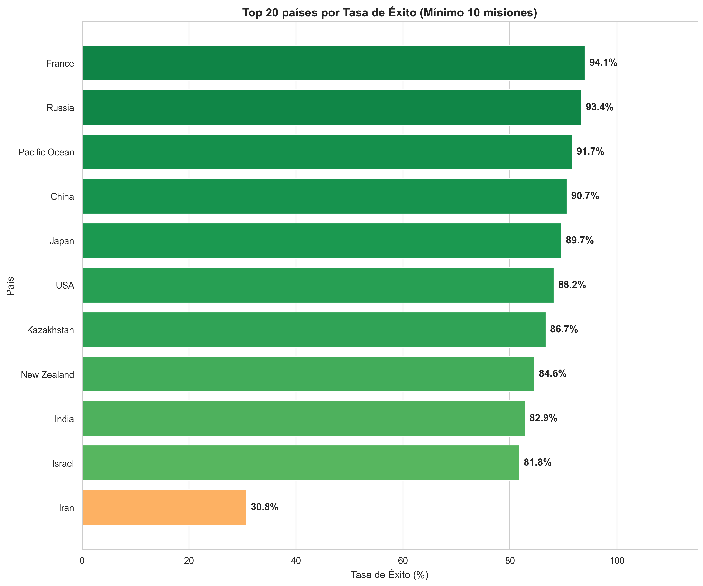
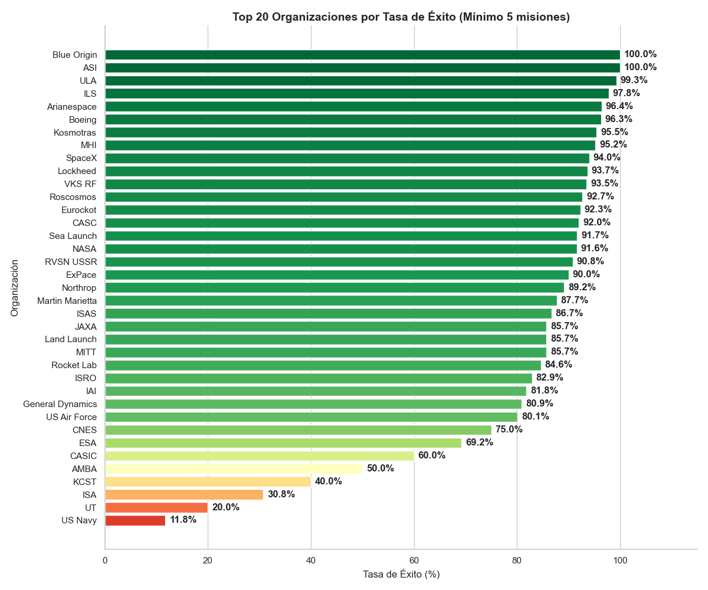
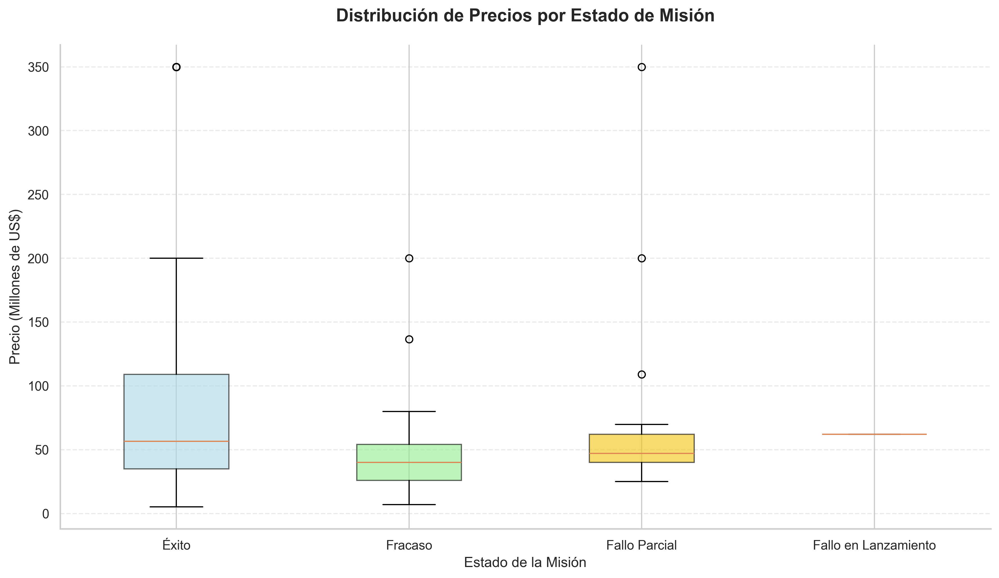

Misiones y países
Este gráfico muestra la evolución de la cantidad de lanzamientos a lo largo del tiempo. Se observa que desde el comienzo de la carrera espacial la cantidad de misiones espaciales aumentó considerablemente llegando a un pico en 1971. Luego disminuyó y se mantuvo estable durante varios años, hasta los años recientes donde comenzó a aumentar nuevamente.

A continuación se muestra cómo evolucionó la tasa de éxito de las misiones a lo largo del tiempo. Es importante mencionar que las misiones son de distinto tipo, de distinto objetivo y de distinto presupuesto, es por eso que pueda parecer que la capacidad de los equipos no mejora con el tiempo, sin embargo lo que sucede es que se prueban disinto tipos de misiones de diferente dificultad.

Se muestra también el top 10 de países con más misiones. Como dato importante se menciona que gran parte de las misiones que se le contabilizan a Kazahstan se hicieron durante la ex URSS.

Se muestra también la evolución en el tiempo en el éxito de las misiones del top 5 de países con más misiones.

Por último en esta sección se muestra el top 20 de países de acuerdo a la tasa de éxito total, es decir, un resumen para todos los años considerados en la base de datos. Para que la comparación sea justa se grafican únicamente los países que tengan un mínimo de 10 misiones.

Carrera espacial: USA vs URSS
La Carrera Espacial no fue solo una competencia técnica sobre quién llegaba más lejos, fue la máxima expresión de la Guerra Fría librada en el terreno de la propaganda, la ideología y la tecnología militar. Por su importancia histórica se muestra la comparación entre USA y URSS (luego Rusia) durante todos los años disponibles.

Misiones y resultados
El análisis de las organizaciones comienza comparando el top 10 con más misiones espaciales a lo largo de la historia.

Se sigue comparando la fiabilidad histórica de las organizaciones con más misiones.

En el siguiente gráfico se muestra en orden descendente las organizaciones más exitosas de la historia de acuerdo a la tasa de éxito.

Por último se presentan los resultados generales de todas las misiones de la historia que esta base de datos contiene.

Relación entre costo total de una misión y su éxito
Para poder graficar correctamente el histograma y que visualmente tenga fácil interpretación se exlcuyeron los valores extremos a la derecha, es decir, cualquier misión con un costo superior a los US$ 1.000.000.000.

La evolución de estos precios a lo largo del tiempo no ha tenido un solo sentido. Durante la carrera lunar, el costo promedio por misión aumentaba a medida que los países competían por conseguir uno de los hitos más grandes de la humanidad. Luego de esto las misiones bajaron el costo porque las misiones no apuntaban tan alto, esto fue así hasta que vino la era de desarrollo de transboradadores espaciales, especialmente con el programa de la USSR Energia-Burán, un programa con un presupuesto de US$5.000.000.000 para el desarrollo de los mismos, sin embargo esta era terminó por los elevados costos. Finalmente se cierra la línea de tiempo con la era New Space, una era marcada por la suma de SpaceX al selecto grupo de organizaciones espaciales, y esta era está marcada por una significante reducción en los costos.

La mejor forma de mostrar la relación entre los precios y el estado de una misión es mediante gráficos de caja, estos comparan la distribución de precios filtrando por categorías de la variable estado.
Se observa que existe una relación entre el éxito de una misión y el presupuesto de esta. Mientras mayor sea el presupuesto, mayor será el éxito de una misión, en promedio.
